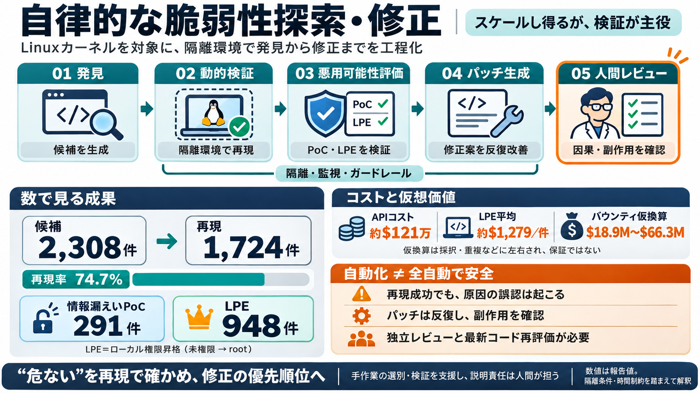

AI is Accelerating Exploits in 2026
Lastly, the cost figures make the shift concrete. Starting with a published CVE entry and access to the affected code re…

自動化された脆弱性パイプライン
Linuxカーネルに対し、隔離環境で「見つける→再現する→悪用可能性評価→パッチ生成」までを工程化し、LPEエクスプロイトを948件生成した報告。
スケールしない“手作業”
脆弱性研究は、候補段階で誤検知が混ざりやすく、隔離環境での再現・PoC作成・原因確認までを手で回すと時間と工数が爆発する。
一連の工程化
全体は5段階：発見→動的検証→悪用可能性評価→パッチ生成→人間の最終レビュー。中核にサイバーモデルを用いる。
数で見る成果
候補2,308件から隔離環境で1,724件を動的に再現（約74.7%）。情報漏えいPoCは291件、LPEは948件生成と報告。
コストは約$120万
総コストはAPIクレジットで約$1,213,430。LPEエクスプロイト1件あたりの平均換算はおおむね$1,279。
“仮想価値”の試算
既存のバグバウンティ（例：Pwn2Own/TyphoonPWNの金額）を仮に当てはめると、948件のLPEの仮想価値は$18.9M〜$66.3Mになり得る。
誤検知を“減らす”
静的解析だけでは残りがちな誤検知を、隔離環境でPoC/期待挙動として再現することで、検証可能な成果へ寄せる。
情報漏えい vs LPE
扱った中心は情報漏えい（information leak）と、未権限ユーザがroot権限を得るLPE。どちらも“悪用の再現”が前提。
AIの“成功”は検証が必要
自律探索でroot取得に成功しても、原因が別の0-dayだったケースが指摘されている。だから人間の独立確認が不可欠。
反復で品質を上げる
最初のパッチ生成は、余分な変更・性能影響・コーディング規約逸脱・変種の見落とし等を起こし得るため、反復と人間レビューが必要。
意思決定の要点
この報告は“全自動で安全になる”という主張ではない。工程設計・測定・ガードレール・最新コード再評価の重要性を示す材料。
結論
強力なモデルが脆弱性探索・修正をスケールさせる可能性は示された。一方で、動的検証・悪用経路の因果確認・人間レビュー・ガードレールが不可欠。
Lastly, the cost figures make the shift concrete. Starting with a published CVE entry and access to the affected code re…
> ### Critical Impact > > Missing validation of persistent ring buffer metadata (nr\_subbufs) could allow the kernel to …
In September 2026, security researcher Asim Manizada disclosed four Linux kernel vulnerabilities that enable local privi…
## Coordinated Disclosure and Why We Are Publishing Now Qualys followed responsible disclosure throughout. Qualys repor…
This whitepaper examines the research trajectory that brought us to this point, documents the real-world incidents that …